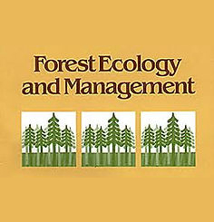
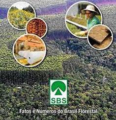

Links Úteis
FNBFO Fórum
Nacional das Atividades de Base Florestal
(FNBF) é uma entidade criada em 1999 com o objetivo de defender e
representar todo o setor relacionado à atividade florestal, perante o
governo deferal, entidades e sociedade de uma forma geral buscando sempre o
devido reconhecimento e desenvolvimento do setor.
Florest Ecology and
ManagementForest Ecology and Management
publica artigos científicos relacionando ecologia florestal com manejo
florestal, com foco na aplicação de conhecimentos biológicos, ecológicos e
sociais ao manejo e conservação de plantações e florestas
naturais.
Revista
Floram FLORESTA E AMBIENTE é um periódico
científico iniciado em 1994 e publicado pelo Instituto de Florestas da
Universidade Federal Rural do Rio de Janeiro. Tem como objetivo divulgar
artigos originais, artigos de revisão ou atualização bibliográfica e artigos
de comunicação, relacionados a Ciência Florestal.
CERNECerne é uma
revista editada pela Universidade Federal
de Lavras, estado de Minas Gerais, Brasil, que publica trimestralmente
artigos originais que representam contribuição relevante para o
desenvolvimento da Ciência Florestal (Ecologia Florestal, Manejo Florestal,
Silvicultura, Tecnologia de Produtos Florestais).
 Marcio Romarco de
OliveiraEssa página é destinada a alunos
da Universidade Federal dos Vales do Jequitinhonha e Mucuri que estão
cursando disciplinas na área de Mensuração e Manejo Florestal, permitindo
uma interação maior dos alunos com as disciplinas ministradas pelo Professor
Marcio Leles.
Marcio Romarco de
OliveiraEssa página é destinada a alunos
da Universidade Federal dos Vales do Jequitinhonha e Mucuri que estão
cursando disciplinas na área de Mensuração e Manejo Florestal, permitindo
uma interação maior dos alunos com as disciplinas ministradas pelo Professor
Marcio Leles.
DCFM UFESO
Departamento de Ciências Florestais e da Madeira
(DCFM), do Centro de Ciências Agrárias e Engenharias da UFES, foi criado em
2006, ocupando a estrutura do projeto intitulado “Núcleo de Estudos e de
Difusão de Tecnologia em Floresta, Recursos Hídricos e Agricultura
Sustentável” (NEDTEC), em Jerônimo Monteiro-ES.
 FUPEF UFPRA FUPEF
tem como uma das principais finalidades
promover o apoio sistemático ao desenvolvimento e a sustentabilidade de
atividades florestais nas áreas do ensino, pesquisa, desenvolvimento e
difusão tecnológica, junto ao setor público.
FUPEF UFPRA FUPEF
tem como uma das principais finalidades
promover o apoio sistemático ao desenvolvimento e a sustentabilidade de
atividades florestais nas áreas do ensino, pesquisa, desenvolvimento e
difusão tecnológica, junto ao setor público.
Sociedade Brasileira de
SilviculturaA SBS - Sociedade Brasileira
de Silvicultura é uma associação representativa do setor florestal, de
âmbito nacional, fundada em setembro de 1955.